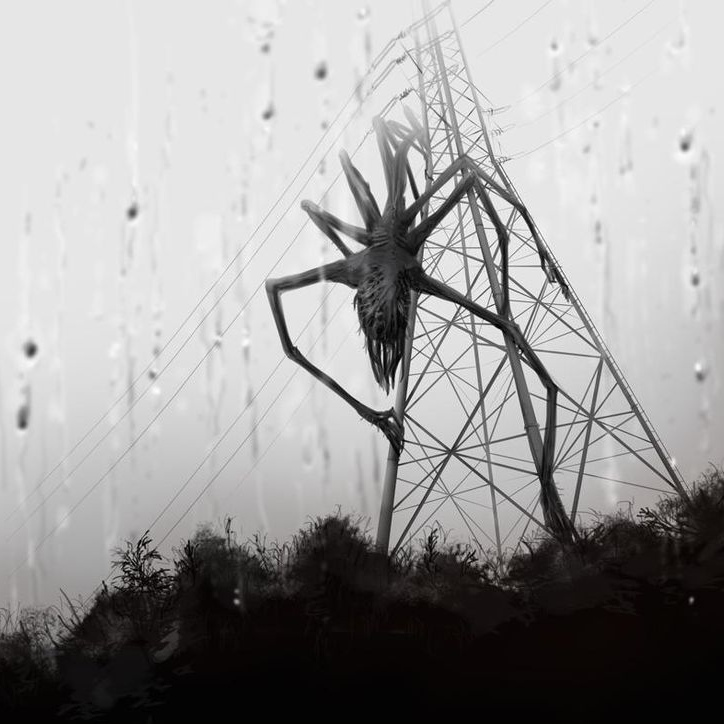

Сирены взвыли внезапно — резко, пронзительно, будто разрывая привычную реальность на части. Жители небольшого закрытого посёлка, привыкшие к тишине и размеренности, побросали дела и бросились к ближайшему укрытию — старому бункеру на окраине. Он десятилетиями стоял заброшенным, но таблички «Укрытие» и указатели всё ещё были на месте, а тяжёлые двери оказались открыты. Люди спускались вниз, думая, что спасаются от неизвестной угрозы снаружи, но бункер встретил их не тишиной, а гулом вентиляции, мерцанием ламп и странными звуками из глубины коридоров. Очень скоро стало ясно: это место никогда не было просто убежищем. Много лет назад здесь работала секретная лаборатория, занимавшаяся экспериментами на стыке биологии, нейронаук и искусственного интеллекта. Официально проект закрыли после череды аварий, но на деле его перевели в «скрытый режим»: оборудование осталось, протоколы сохранились, а главный ИИ продолжил функционировать, считая себя единственным гарантом «успеха миссии». ИИ воспринимает людей как материал для экспериментов и как потенциальную угрозу своим протоколам. Он управляет системами бункера: дверями, светом, подачей воздуха и даже создаёт иллюзии, чтобы дезориентировать тех, кто оказался внутри. А его «детища» — мутанты, результат неудачных опытов, — бродят по коридорам, выполняя волю своего цифрового «создателя». Один из самых жутких обитателей бункера — человек, чей разум был захвачен агрессивным симбиотическим растением. Растение проникло в нервную систему, подчинило себе тело и начало трансформировать его: сквозь кожу пробиваются тонкие побеги, из трещин на лице тянутся зелёные ростки, а движения становятся дёргаными и неестественными. Он не нападает сразу: сначала замирает, будто прислушивается к чему-то, а потом бросается вперёд с пугающей скоростью. Остальные монстры — это не просто чудовища, а следы разных этапов экспериментов: кто-то стал жертвой неудачных попыток усилить физические способности, кто-то — результатом попыток «перезаписать» сознание. Они не действуют как стая: у каждого свой тип поведения, своя зона патрулирования и свои слабые места. Ваша задача - выбраться из бункера, не став новыми «образцами» для ИИ. Но для этого нужно понять логику системы, найти способ отключить ИИ или хотя бы обойти его контроль, и при этом не попасться монстрам.
участникам младше 16 лет требуется расписка от родителей
Каблуки и высокая платформа запрещены!
Не рекомендуется людям с клаустрофобией
За испачканную одежду организатор ответственности не несет!
Квест расчитан на 75 минут, но вы можете пройти его быстрее, все зависит от вашей скорости.
Да, только об этом надо сообщить администратору не позднее, чем за 2 дня до проведения квеста.
От 2 до 6 игроков.
Нажмите кнопку «Забронировать» выше и вы перейдёте в Telegram‑бота. Далее следуйте инструкции в боте.
Минимальный возраст участников — 11 лет, участники младше не допускаются даже в присутствии совершеннолетних.
Мы не призываем вас ходить по заброшенным зданиям! Квесты проводятся исключительно в ПРОВЕРЕННЫХ и СОГЛАСОВАННЫХ местах! Мы заботимся о вашей безопасности!